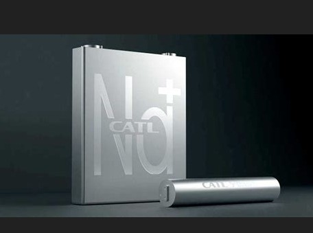

Publicado em 2025-05-12 14:55:00
Durante anos, disseram-nos que o futuro dependia de um punhado de elementos exóticos com nomes quase mitológicos: neodímio, disprósio, térbio. Chamaram-lhes “terras raras” — como se fossem jóias escondidas nos ossos da Terra, guardadas por dragões geopolíticos. Mas a verdade é mais crua e mais simples: não são raras, são apenas sujas de extrair. A raridade está no cuidado, na ética, na tecnologia limpa — e não nos átomos.
Durante décadas, este mito alimentou guerras silenciosas, tratados dependentes, alianças forjadas à força da necessidade. Tornaram-se o novo petróleo, não pela escassez, mas pela conveniência de manter o mundo dependente de meia dúzia de fornecedores com pouco escrúpulo ambiental ou laboral.
Mas agora, uma revolução murmura ao longe.
A CATL, gigante chinesa da energia, acaba de revelar a primeira bateria de sódio produzida em série. Sim, sódio, o sal da Terra, o irmão democrático do lítio. Chama-se Naxtra, e com ela vem um grito silencioso: podemos fazer diferente, mais barato, mais seguro, e sem correntes de exploração.
Esta bateria não precisa de terras raras. Não precisa de cobalto. Nem de lítio extraído à custa da água dos povos. E ainda assim, promete: 10 mil ciclos de carga, resistência ao frio glacial, segurança inata contra incêndios, e um preço que ameaça derrubar o dogma do "elétrico para elites".
Estamos perante o início de uma nova era — a era da inteligência de materiais, onde o saber substitui a escavação, e a engenharia limpa vence a ganância suja.
Portugal, ainda a remoer na velha cartilha do lítio em Montalegre, deveria olhar para esta inovação e perguntar-se: queremos ser mineradores ou criadores? Extratores ou visionários?
A resposta está escrita nos circuitos do futuro.
Por : Augustus Veritas Lumen